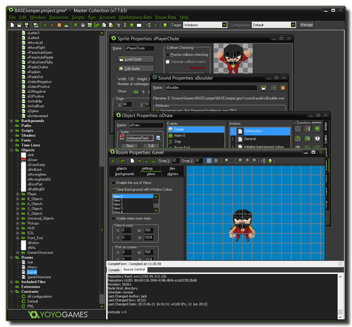

Todos sabemos que jugar juegos de computadora es divertido. Pero
lo que no mucha gente se da cuenta es que es de hecho ¡más
divertido diseñar tus propios juegos de computador y dejar qué
otras personas los jueguen! Ahora, hacer juegos de computador no
es normalmente una tarea simple y los juegos comerciales que compras
hoy en día toman típicamente entre dos o tres años de desarrollo con
equipos de entre 10 y 50 personas y los presupuestos pueden llegar
fácilmente a los millones de dolares. Sin mencionar el hecho de que
esas personas son altamente experimentadas: programadores, diseñadores
de arte, técnicos de sonido, etc.
Pero eso ha cambiado con la llegada de GameMaker: Studio. Con
GameMaker: Studio usted puede comenzar a prototipar y crear
sus propios juegos de computador rápida y fácilmente sin la necesidad
absoluta de tener que aprender un lenguaje de programación.
GameMaker: Studio ofrece una interfaz intuitiva y fácil de usar
de Drag-and-Drop (referido como 'DnD' de ahora en adelante) con iconos
de acciones los cuales le permiten comenzar a crear sus propios juegos
rápidamente. Usted puede importar y crear imágenes y sonidos para utilizarlos
en objetos, e instantaneamente ver los resultados de sus acciones al presionar
un botón. Obviamente, usted quiere comenzar lo más rápido posible, así que con
GameMaker: Studio están incluidos un número de tutoriales y demos los
cuales usted puede importar y usar para comenzar directamente con el trabajo.
Estos tutoriales contienen muchos sprites y gráficos los cuales han sido
diseñados como "place holders" (recursos temporales) para que usted pueda
iniciar pero ellos no deben ser usados en ningún producto finalizado.
Cabe destacar aquí que GameMaker: Studio se enfoca en juegos en
dos dimensiones (¡lo cual no quiere decir que no sea capaz de manejar gráficos 3D!)
y muchos grandes juegos que utilizan tecnología de sprites 2D, parecen
muy 3D cuando estas jugando.

Como mencioné previamente, usted necesita asignar imagenes (sprites) y
otras cosas a los objetos, los cuales son fácilmente definidos en su
juego a traves de los iconos de acciones DnD para otorgarles propiedades
y comportamientos, para que despues los pueda ubicar en los rooms
junto con los fondos (backgrounds) y otras cosas para darle a su juego el
aspecto que usted quiere. Es en estos rooms que el juego toma lugar, y ellos
pueden ser considerados escencialmente como "niveles" de su juego. Si
usted domnia la interfaz DnD y como controlar las cosas básicas en los
objetos, usted puede entonces moverse fácilmente al lenguaje de
programación GML el cual te permitirá tener mucho más control sobre cada
aspecto de GameMaker: Studio
Este manual te enseñará las cosas más importantes que debes saber acerca de
GameMaker: Studio y sobre como puedes crear tu propio juego con él.
Tenga en cuenta que, incluso con un programa como GameMaker: Studio,
diseñar juegos de computador no es una tarea completamente sin esfuerzo - ¡así
que no hay un botón de "Hacer un MMORPG" por aquí! Tenga en cuenta que hay
muchos aspectos relacionados con el desarrollo de juegos que son igualmente
importantes: game-play, gráficos, sonidos, interacción del usuario, etc...
pero, el aspecto más importante de todos es la paciencia.
Mientras GameMaker: Studio es una herramienta podersa, no puede hacer
todo por usted al toque de un botón así que comeinza con ejemplos simples y
te daras cuenta de que crear juegos no es solamente divertido, pero además que
¡aprender a usar GameMaker: Studio es también muy gratificante!
Para más información, ejemplos, tutoriales, ideas y links a foros útiles y
otros excelentes sitios, revise el website
Pronto te convertirás en un maestro de GameMaker. ¡Disfruta la experiencia!